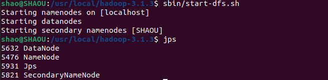

Hadoop安装与配置
安装Hadoop
首先要保证已经安装配置好了 Java。参考文章
在虚拟机的浏览器中访问 hadoop官网 下载hadoop-3.1.3.tar.gz。
sudo tar -zxf Downloads/hadoop-3.1.3.tar.gz -C /usr/local/ # 将 Hadoop 安装至 /usr/local
cd /usr/local # 目录下多了一个 hadoop-3.1.3Hadoop 解压后即可使用。输入如下命令来检查 Hadoop 是否可用：
cd /usr/local/hadoop-3.1.3/
./bin/hadoop versionHadoop单机配置（非分布式）
Hadoop 默认模式为非分布式模式（本地模式），无需进行其他配置即可运行。非分布式即单 Java 进程，方便进行调试。
Hadoop 附带了丰富的例子，运行下面的命令就可以看到所有的例子，包括 wordcount、terasort、join、grep 等：
bin/hadoop jar share/hadoop/mapreduce/hadoop-mapreduce-examples-3.1.3.jar以运行grep案例为例：将 input 文件夹中的所有文件作为输入，筛选当中符合正则表达式 dfs[a-z.]+ 的单词并统计出现的次数，最后输出结果到 output 文件夹中。
cd /usr/local/hadoop-3.1.3/
sudo mkdir input
sudo cp etc/hadoop/*.xml input # 随便传入一些文件作为输入
bin/hadoop jar share/hadoop/mapreduce/hadoop-mapreduce-examples-3.1.3.jar grep input output 'dfs[a-z.]+'查看结果：
cat output/*Hadoop 默认不会覆盖结果文件，因此如果要再次运行这个例子会提示出错，需要先将 ./output 删除。
Hadoop伪分布式配置
配置 /usr/local/hadoop-3.1.3/etc/hadoop/ 中的 core-site.xml：
<configuration>
<property>
<name>hadoop.tmp.dir</name>
<value>file:/usr/local/hadoop-3.1.3/tmp</value>
<description>Abase for other temporary directories.</description>
</property>
<property>
<name>fs.defaultFS</name>
<value>hdfs://localhost:9000</value>
</property>
</configuration>再配置 hdfs-site.xml：
<configuration>
<property>
<name>dfs.replication</name>
<value>1</value>
</property>
<property>
<name>dfs.namenode.name.dir</name>
<value>file:/usr/local/hadoop-3.1.3/tmp/dfs/name</value>
</property>
<property>
<name>dfs.datanode.data.dir</name>
<value>file:/usr/local/hadoop-3.1.3/tmp/dfs/data</value>
</property>
</configuration>Hadoop 的运行方式是由配置文件决定的（运行 Hadoop 时会读取配置文件），因此如果需要从伪分布式模式切换回非分布式模式，需要删除
core-site.xml中的配置项。
配置完成后，执行 NameNode 的格式化：
cd /usr/local/hadoop-3.1.3
./bin/hdfs namenode -format接着开启 NameNode 和 DataNode 守护进程：
sbin/start-dfs.sh启动完成后，可以通过命令 jps 来判断是否成功启动：

运行Hadoop伪分布式实例
上面的单机模式，grep 例子读取的是本地数据，伪分布式读取的则是 HDFS 上的数据。
要使用 HDFS，首先需要在 HDFS 中创建用户目录：
cd /usr/local/hadoop-3.1.3
bin/hdfs dfs -mkdir -p /user/shao建立一个文件夹 input：
bin/hdfs dfs -mkdir input将 /usr/local/hadoop-3.1.3/etc/hadoop 中的 xml 文件复制到分布式文件系统中的 /user/shao/input 中
bin/hdfs dfs -put ./etc/hadoop/*.xml input由于已创建相应的用户目录
/user/shao，因此在命令中就可以使用相对路径如input，其对应的绝对路径就是/user/shao/input。
复制完成后，可以通过如下命令查看文件：
bin/hdfs dfs -ls input运行例子：
bin/hadoop jar share/hadoop/mapreduce/hadoop-mapreduce-examples-3.1.3.jar grep input output 'dfs[a-z.]+'查看运行结果：
bin/hdfs dfs -cat output/*Hadoop 运行程序时，输出目录不能存在，否则会提示错误。因此如果要再次运行本例，需要先删去 output文件夹：
bin/hdfs dfs -rm -r output 伪分布式运行 MapReduce 作业的方式跟单机模式相同，区别在于伪分布式读取的是HDFS中的文件，而不是本地文件。
可以将运行结果取回到本地：
rm -r ./output # 先删除本地的 output 文件夹（如果存在）
bin/hdfs dfs -get output ./output # 将 HDFS 上的 output 文件夹拷贝到本机
cat ./output/*关闭 Hadoop：
./sbin/stop-dfs.sh注意：下次启动 hadoop 时，无需再进行 NameNode 的初始化，只需要直接运行
./sbin/start-dfs.sh即可。